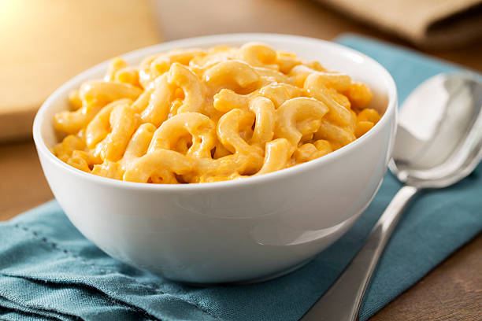
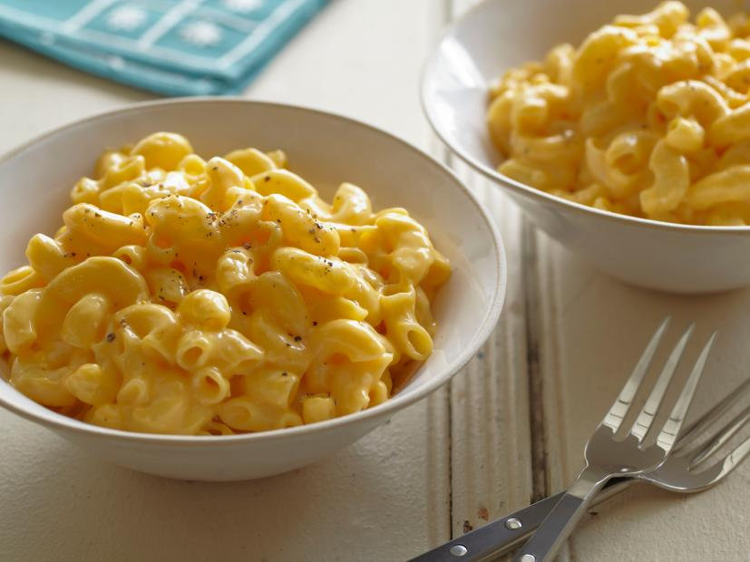
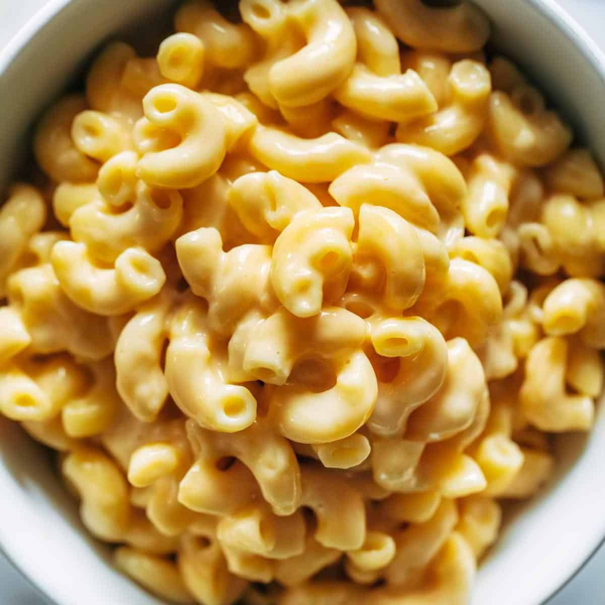

Homemade Mac and Cheese!
Mac and Cheese is viewed by many as a "comfort food". I love a lot of cheese and it is my childhood food, lots of great memories with Mac and Cheese that I'm sure a lot of people can relate.
Gallery



Ingredients
- 8 ounces cooked elbow macaroni
- 2 cups shredded sharp Cheddar cheese
- 1/2 cup grated Parmesan cheese
- 3 cups of milk
- 2 1/2 tablespoons all-purpose flour
- 2 tablespoons butter
- 1/2 cup bread crumbs
- 1 pinch paprika
PERFECT MAC AND CHEESE IN 5 STEPS:
- Preheat the oven: Preheat to 325 degrees and lightly grease a square baking dish. 😅
- Cook the macaroni: 😄
- Slightly undercook your noodles (about 1 minute under al-dente).
- Drain and set aside.
- Make the roux: 😎
- Melt the butter in a medium saucepan over medium heat.
- Blend in the flour, salt, and pepper.
- Cook for 2 minutes.
- Add milk and cheese: 🤠
- Stir in milk and half and half, slowly, stirring constantly.
- Remove from heat.
- Add 1 cup shredded cheese to the sauce and stir just until melted.
- Add the cooked macaroni noodles and toss to coat them in the sauce.
- Pour into baking dish. 🤤
- Pour half or the pasta mixture into the prepared baking dish.
- Sprinkle 1/2 cup cheese over the top.
- Pour remaining pasta over it and sprinkle with remaining cheese.
Nutrition Facts
Per Serving:
858.2 calories; protein 37.7g 75% DV; carbohydrates 66.7g 22% DV; fat 48.7g 75% DV; cholesterol 141.6mg 47% DV; sodium 879.3mg 35% DV.
Check out how others have made Mac and Cheese: